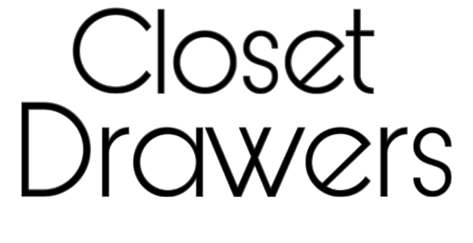

ピンク
ピンクを主役にしたカラーコーデ。服・小物・アクセントのどこに使ってもOK。濃淡や素材を変えて自分らしく取り入れてみて。

この辞典では、ファッションくじに登場するCOLOR・STYLE・POINTを紹介しています。
知らない言葉が出たときや、コーデのヒント探しにどうぞ♡
ピンクを主役にしたカラーコーデ。服・小物・アクセントのどこに使ってもOK。濃淡や素材を変えて自分らしく取り入れてみて。
ブラックを主役にしたカラーコーデ。服・小物・アクセントのどこに使ってもOK。濃淡や素材を変えて自分らしく取り入れてみて。
ホワイトを主役にしたカラーコーデ。服・小物・アクセントのどこに使ってもOK。濃淡や素材を変えて自分らしく取り入れてみて。
ブルーを主役にしたカラーコーデ。服・小物・アクセントのどこに使ってもOK。濃淡や素材を変えて自分らしく取り入れてみて。
レッドを主役にしたカラーコーデ。服・小物・アクセントのどこに使ってもOK。濃淡や素材を変えて自分らしく取り入れてみて。
グリーンを主役にしたカラーコーデ。服・小物・アクセントのどこに使ってもOK。濃淡や素材を変えて自分らしく取り入れてみて。
パープルを主役にしたカラーコーデ。服・小物・アクセントのどこに使ってもOK。濃淡や素材を変えて自分らしく取り入れてみて。
ブラウンを主役にしたカラーコーデ。服・小物・アクセントのどこに使ってもOK。濃淡や素材を変えて自分らしく取り入れてみて。
オレンジを主役にしたカラーコーデ。服・小物・アクセントのどこに使ってもOK。濃淡や素材を変えて自分らしく取り入れてみて。
グレーを主役にしたカラーコーデ。服・小物・アクセントのどこに使ってもOK。濃淡や素材を変えて自分らしく取り入れてみて。
黄色を主役にしたカラーコーデ。服・小物・アクセントのどこに使ってもOK。濃淡や素材を変えて自分らしく取り入れてみて。
ベージュを主役にしたカラーコーデ。服・小物・アクセントのどこに使ってもOK。濃淡や素材を変えて自分らしく取り入れてみて。
カーキを主役にしたカラーコーデ。服・小物・アクセントのどこに使ってもOK。濃淡や素材を変えて自分らしく取り入れてみて。
ライトブルーを主役にしたカラーコーデ。服・小物・アクセントのどこに使ってもOK。濃淡や素材を変えて自分らしく取り入れてみて。
ターコイズを主役にしたカラーコーデ。服・小物・アクセントのどこに使ってもOK。濃淡や素材を変えて自分らしく取り入れてみて。
大地や植物を思わせる、自然で落ち着いた配色。ベージュ・ブラウン・カーキなどが代表的。ナチュラルやヴィンテージ系に取り入れやすい。
海やセーラースタイルを連想させる爽やかな配色。ネイビー・白・ブルーに赤を効かせるのが定番。夏らしいコーデやトラッド系とも好相性。
古い写真のような、黄みを帯びた茶系の色合い。ブラウンやベージュを中心にまとめると作りやすい。レトロで温かみのある雰囲気に仕上がる。
白・黒・グレーを中心にまとめる無彩色の配色。色数を抑えることで形や素材感が引き立つ。モードからカジュアルまで幅広く使える。
蛍光色のように強く発色する鮮やかなカラー。ピンク・グリーン・黄色などをアクセントに。Y2Kやサイバー、ポップなコーデと相性◎。
白を混ぜたような、淡くやさしい色合い。ピンク・水色・黄色・ラベンダーなどが代表的。ガーリーやキュートな雰囲気を作りやすい。
彩度が高く、はっきり鮮やかな色合い。赤・青・黄・緑などを主役として大胆に使える。ポップで元気な印象や差し色にもおすすめ。
少しグレーを混ぜたような落ち着いた色合い。彩度を抑えたピンクやブルー、グリーンなど。やわらかく大人っぽいコーデにまとまりやすい。
一言では表しにくい、曖昧で繊細な中間色。グレージュやモーヴなど複数色が混ざった印象。淡くまとめると洗練されたコーデに。
白に近いほど淡く、明るいトーンのカラー。ごく薄いピンク・ブルー・黄色などが代表的。軽やかで透明感のある印象を作りやすい。
明度を抑えた、深く暗い色を中心とした配色。ネイビー・深緑・ボルドーなどを組み合わせる。シックで重厚感のあるコーデに向いている。
氷のように冷たく透明感のある淡い色合い。青みの水色・ラベンダー・白などが中心。冬っぽさや幻想的なムードを演出できる。
宝石のように深く鮮やかな色を使う配色。ルビー・エメラルド・サファイア系が代表的。華やかで高級感のあるアクセントになる。
金属のような光沢を感じるカラー。シルバーやゴールドなどを主役やアクセントに。サイバー・モード・Y2K系と特に相性が良い。
シャーベットカラーを主役にしたカラーコーデ。服・小物・アクセントのどこに使ってもOK。濃淡や素材を変えて自分らしく取り入れてみて。
少し褪せたような懐かしさを感じる配色。マスタード・深緑・レンガ・ブラウンなどが定番。70年代風や古着MIXにも取り入れやすい。
時代に左右されにくい、深く上品な色合い。ネイビー・ボルドー・深緑などが代表的。トラッドやクラシカルな装いと好相性。
ネイビーを主役にしたカラーコーデ。服・小物・アクセントのどこに使ってもOK。濃淡や素材を変えて自分らしく取り入れてみて。
ボルドーを主役にしたカラーコーデ。服・小物・アクセントのどこに使ってもOK。濃淡や素材を変えて自分らしく取り入れてみて。
アイボリーを主役にしたカラーコーデ。服・小物・アクセントのどこに使ってもOK。濃淡や素材を変えて自分らしく取り入れてみて。
ミントを主役にしたカラーコーデ。服・小物・アクセントのどこに使ってもOK。濃淡や素材を変えて自分らしく取り入れてみて。
テラコッタを主役にしたカラーコーデ。服・小物・アクセントのどこに使ってもOK。濃淡や素材を変えて自分らしく取り入れてみて。
オリーブを主役にしたカラーコーデ。服・小物・アクセントのどこに使ってもOK。濃淡や素材を変えて自分らしく取り入れてみて。
ゴールドを主役にしたカラーコーデ。服・小物・アクセントのどこに使ってもOK。濃淡や素材を変えて自分らしく取り入れてみて。
シルバーを主役にしたカラーコーデ。服・小物・アクセントのどこに使ってもOK。濃淡や素材を変えて自分らしく取り入れてみて。
ラベンダーを主役にしたカラーコーデ。服・小物・アクセントのどこに使ってもOK。濃淡や素材を変えて自分らしく取り入れてみて。
黄みを感じるあたたかなブラウン系カラー。ベージュより深く、ブラウンより軽やかな印象に。秋色だけでなく、差し色や小物として取り入れてもOK。
ブラウン・黄色・赤・グリーンを連想する遊び心のある配色。すべての色を使っても、一部を拾ってまとめてもOK。いつも選ばない配色に挑戦するきっかけにしてみて。
ピンク・ホワイト・グリーンを組み合わせたやさしい配色。3色を同じ割合で使わなくてもOK。淡色にも和風にも、自分らしくアレンジしてみて。
ブルー・グリーン・パープルを中心にした華やかな配色。深い色や光沢感を混ぜると孔雀の羽のような雰囲気に。大胆な色合わせを楽しみたいときにもおすすめ。
黄色とブラックを中心にしたコントラストの強い配色。どちらか一方をメインにすると取り入れやすい。ポップにも辛口にも振れる自由なお題。
同系色や近い色を、濃淡や色味を変えながらつなぐ配色。複数のアイテムを使って色が移り変わるようにまとめてもOK。なめらかな色の流れを意識して楽しんでみて。
リボンやフリルなど甘く可愛らしい要素。色・素材・小物まで、その世界観に寄せて組み合わせるのがコツ。完全再現でも一要素だけ取り入れる解釈でもOK。
2000年代風のポップで大胆なムード。色・素材・小物まで、その世界観に寄せて組み合わせるのがコツ。完全再現でも一要素だけ取り入れる解釈でもOK。
ルーズなシルエットやスニーカーを使う都会的な装い。色・素材・小物まで、その世界観に寄せて組み合わせるのがコツ。完全再現でも一要素だけ取り入れる解釈でもOK。
無機質さや構築的なシルエットを楽しむ洗練スタイル。色・素材・小物まで、その世界観に寄せて組み合わせるのがコツ。完全再現でも一要素だけ取り入れる解釈でもOK。
昔の時代を思わせる色柄や形を取り入れるスタイル。色・素材・小物まで、その世界観に寄せて組み合わせるのがコツ。完全再現でも一要素だけ取り入れる解釈でもOK。
フリルやレース、ボリューム感を楽しむドレススタイル。色・素材・小物まで、その世界観に寄せて組み合わせるのがコツ。完全再現でも一要素だけ取り入れる解釈でもOK。
気負わず日常に取り入れやすいベーシックスタイル。色・素材・小物まで、その世界観に寄せて組み合わせるのがコツ。完全再現でも一要素だけ取り入れる解釈でもOK。
学生風のシャツ・ニット・チェックなどを使う上品スタイル。色・素材・小物まで、その世界観に寄せて組み合わせるのがコツ。完全再現でも一要素だけ取り入れる解釈でもOK。
スポーツウェアの要素を街着に取り入れるスタイル。色・素材・小物まで、その世界観に寄せて組み合わせるのがコツ。完全再現でも一要素だけ取り入れる解釈でもOK。
古着のような年代感や味わいを楽しむスタイル。色・素材・小物まで、その世界観に寄せて組み合わせるのがコツ。完全再現でも一要素だけ取り入れる解釈でもOK。
自然体でやわらかな素材や色を使うスタイル。色・素材・小物まで、その世界観に寄せて組み合わせるのがコツ。完全再現でも一要素だけ取り入れる解釈でもOK。
着崩しやダメージ感を取り入れた90年代風スタイル。色・素材・小物まで、その世界観に寄せて組み合わせるのがコツ。完全再現でも一要素だけ取り入れる解釈でもOK。
シャツやジャケットなどきちんと感を意識した装い。色・素材・小物まで、その世界観に寄せて組み合わせるのがコツ。完全再現でも一要素だけ取り入れる解釈でもOK。
上品で伝統的なディテールを取り入れるスタイル。色・素材・小物まで、その世界観に寄せて組み合わせるのがコツ。完全再現でも一要素だけ取り入れる解釈でもOK。
カーゴや迷彩など軍服由来の要素を使うスタイル。色・素材・小物まで、その世界観に寄せて組み合わせるのがコツ。完全再現でも一要素だけ取り入れる解釈でもOK。
明るい色や楽しいモチーフを大胆に使うスタイル。色・素材・小物まで、その世界観に寄せて組み合わせるのがコツ。完全再現でも一要素だけ取り入れる解釈でもOK。
機能的な服や自然になじむアイテムを使うスタイル。色・素材・小物まで、その世界観に寄せて組み合わせるのがコツ。完全再現でも一要素だけ取り入れる解釈でもOK。
やわらかなシルエットで女性らしさを表現するスタイル。色・素材・小物まで、その世界観に寄せて組み合わせるのがコツ。完全再現でも一要素だけ取り入れる解釈でもOK。
黒や重厚な装飾でダークな美しさを表現するスタイル。色・素材・小物まで、その世界観に寄せて組み合わせるのがコツ。完全再現でも一要素だけ取り入れる解釈でもOK。
チェック・スタッズ・チェーンなど反骨的な要素を使うスタイル。色・素材・小物まで、その世界観に寄せて組み合わせるのがコツ。完全再現でも一要素だけ取り入れる解釈でもOK。
レザーや黒を軸にクールで力強くまとめるスタイル。色・素材・小物まで、その世界観に寄せて組み合わせるのがコツ。完全再現でも一要素だけ取り入れる解釈でもOK。
色や装飾を絞り、シンプルさを活かすスタイル。色・素材・小物まで、その世界観に寄せて組み合わせるのがコツ。完全再現でも一要素だけ取り入れる解釈でもOK。
花・レース・曲線的な要素で夢のある雰囲気を作るスタイル。色・素材・小物まで、その世界観に寄せて組み合わせるのがコツ。完全再現でも一要素だけ取り入れる解釈でもOK。
バレエ衣装由来のリボンやチュールを日常着にMIX。色・素材・小物まで、その世界観に寄せて組み合わせるのがコツ。完全再現でも一要素だけ取り入れる解釈でもOK。
フレンチシックに甘さを加えた上品なガーリースタイル。色・素材・小物まで、その世界観に寄せて組み合わせるのがコツ。完全再現でも一要素だけ取り入れる解釈でもOK。
メタリックや近未来的な要素を使う無機質なスタイル。色・素材・小物まで、その世界観に寄せて組み合わせるのがコツ。完全再現でも一要素だけ取り入れる解釈でもOK。
民族調や自然素材、自由な重ね着を楽しむスタイル。色・素材・小物まで、その世界観に寄せて組み合わせるのがコツ。完全再現でも一要素だけ取り入れる解釈でもOK。
デニム・ブーツなど西部劇由来の要素を使うスタイル。色・素材・小物まで、その世界観に寄せて組み合わせるのがコツ。完全再現でも一要素だけ取り入れる解釈でもOK。
森にいそうな素朴さと重ね着を楽しむやさしいスタイル。色・素材・小物まで、その世界観に寄せて組み合わせるのがコツ。完全再現でも一要素だけ取り入れる解釈でもOK。
常識にとらわれない前衛的な形や組み合わせを楽しむスタイル。色・素材・小物まで、その世界観に寄せて組み合わせるのがコツ。完全再現でも一要素だけ取り入れる解釈でもOK。
ジャケットやシャツなど伝統的な服を端正に着るスタイル。色・素材・小物まで、その世界観に寄せて組み合わせるのがコツ。完全再現でも一要素だけ取り入れる解釈でもOK。
70年代風の自由で自然体な色柄やシルエットを楽しむスタイル。色・素材・小物まで、その世界観に寄せて組み合わせるのがコツ。完全再現でも一要素だけ取り入れる解釈でもOK。
開放感のある軽やかな素材やシルエットを楽しむスタイル。色・素材・小物まで、その世界観に寄せて組み合わせるのがコツ。完全再現でも一要素だけ取り入れる解釈でもOK。
メンズライクなアイテムを上品に取り入れるスタイル。色・素材・小物まで、その世界観に寄せて組み合わせるのがコツ。完全再現でも一要素だけ取り入れる解釈でもOK。
色・柄・重ね着を自由にMIXする個性派ストリートスタイル。色・素材・小物まで、その世界観に寄せて組み合わせるのがコツ。完全再現でも一要素だけ取り入れる解釈でもOK。
子どもの頃のようなカラフルで懐かしい可愛さを楽しむスタイル。色・素材・小物まで、その世界観に寄せて組み合わせるのがコツ。完全再現でも一要素だけ取り入れる解釈でもOK。
あえて普通でベーシックな服をシンプルに着るスタイル。色・素材・小物まで、その世界観に寄せて組み合わせるのがコツ。完全再現でも一要素だけ取り入れる解釈でもOK。
海や人魚を連想する光沢・透け感・曲線を楽しむスタイル。色・素材・小物まで、その世界観に寄せて組み合わせるのがコツ。完全再現でも一要素だけ取り入れる解釈でもOK。
華やかさや盛り感、自信のある強さを楽しむスタイル。色・素材・小物まで、その世界観に寄せて組み合わせるのがコツ。完全再現でも一要素だけ取り入れる解釈でもOK。
アメリカンカジュアルをイメージした気取らないスタイル。デニム・Tシャツ・キャップなど定番アイテムも相性◎。古着感やスポーティ要素を混ぜても自由に楽しめる。
上品さや華やかさを感じる、きれいめなスタイル。シルエットや素材、小物で品のある印象を意識してみて。ドレス寄りでもリアクロ寄りでもOK。
スポーツ要素を普段着や別テイストに混ぜるスタイル。ジャージ・スニーカー・キャップなどをポイントにしても◎。全身スポーツにせず、ひとつだけ取り入れる解釈もOK。
個性的なアイテムや少しクセのある組み合わせを楽しむスタイル。甘さ・ダークさ・ストリート感など、好きな要素を自由にMIX。自分らしい“ちょっと違う”を主役にしてみて。
古着っぽいアイテムや年代感のある要素を現代のコーデにMIX。テイストや年代が違うアイテムをあえて組み合わせてもOK。まとまりすぎないバランスも魅力のひとつ。
チャイナモチーフや東洋的なディテールを取り入れたスタイル。襟・刺繍・色使いなど、一部分だけで表現してもOK。現代服とMIXしてリアクロに落とし込むのもおすすめ。
和の要素と洋服を自由に組み合わせるスタイル。和柄や和小物を一点使うだけでも、しっかり雰囲気が出る。着物風に限定せず、自分なりの和×洋を楽しんで。
可愛らしさを感じつつ、甘すぎない軽やかなスタイル。リボンやフリルをカジュアルなアイテムと合わせても◎。普段着に取り入れやすい“かわいい”を意識してみて。
都会的で洗練された雰囲気を意識したスタイル。すっきりしたシルエットや落ち着いた小物が相性◎。シンプルにもモードにも自由に寄せてOK。
かわいい要素に、少しダークで不穏なモチーフをMIXしたスタイル。ピンクやパープルに黒を効かせるなど色でも表現できる。甘さと毒っぽさのバランスを自由に楽しんで。
夢の中のような淡く幻想的な可愛さを楽しむスタイル。パステルカラーやハート、星などのモチーフが相性◎。ふわっとした世界観を自分なりに作ってみて。
妖精や森、幻想世界を思わせる軽やかなスタイル。透け感・花・きらめき・自然モチーフなどを自由にMIX。現実の服に少しだけ幻想感を足す解釈でもOK。
レースの素材感をコーデのどこかに取り入れるPOINT。トップス・ボトム・小物など、使う場所は自由。素材の質感を見せるとテーマが伝わりやすい。
シアーの素材感をコーデのどこかに取り入れるPOINT。トップス・ボトム・小物など、使う場所は自由。素材の質感を見せるとテーマが伝わりやすい。
ニットの素材感をコーデのどこかに取り入れるPOINT。トップス・ボトム・小物など、使う場所は自由。素材の質感を見せるとテーマが伝わりやすい。
ツイードの素材感をコーデのどこかに取り入れるPOINT。トップス・ボトム・小物など、使う場所は自由。素材の質感を見せるとテーマが伝わりやすい。
ベロアの素材感をコーデのどこかに取り入れるPOINT。トップス・ボトム・小物など、使う場所は自由。素材の質感を見せるとテーマが伝わりやすい。
サテンの素材感をコーデのどこかに取り入れるPOINT。トップス・ボトム・小物など、使う場所は自由。素材の質感を見せるとテーマが伝わりやすい。
ボアの素材感をコーデのどこかに取り入れるPOINT。トップス・ボトム・小物など、使う場所は自由。素材の質感を見せるとテーマが伝わりやすい。
メッシュの素材感をコーデのどこかに取り入れるPOINT。トップス・ボトム・小物など、使う場所は自由。素材の質感を見せるとテーマが伝わりやすい。
エナメルの素材感をコーデのどこかに取り入れるPOINT。トップス・ボトム・小物など、使う場所は自由。素材の質感を見せるとテーマが伝わりやすい。
チェックをコーデのどこかに取り入れる柄POINT。服全体でも、小物や一部分だけでもOK。STYLEとの意外な組み合わせも楽しんでみて。
ストライプをコーデのどこかに取り入れる柄POINT。服全体でも、小物や一部分だけでもOK。STYLEとの意外な組み合わせも楽しんでみて。
ドットをコーデのどこかに取り入れる柄POINT。服全体でも、小物や一部分だけでもOK。STYLEとの意外な組み合わせも楽しんでみて。
花柄をコーデのどこかに取り入れる柄POINT。服全体でも、小物や一部分だけでもOK。STYLEとの意外な組み合わせも楽しんでみて。
アニマル柄をコーデのどこかに取り入れる柄POINT。服全体でも、小物や一部分だけでもOK。STYLEとの意外な組み合わせも楽しんでみて。
アーガイルをコーデのどこかに取り入れる柄POINT。服全体でも、小物や一部分だけでもOK。STYLEとの意外な組み合わせも楽しんでみて。
ギンガムチェックをコーデのどこかに取り入れる柄POINT。服全体でも、小物や一部分だけでもOK。STYLEとの意外な組み合わせも楽しんでみて。
タータンチェックをコーデのどこかに取り入れる柄POINT。服全体でも、小物や一部分だけでもOK。STYLEとの意外な組み合わせも楽しんでみて。
ペイズリーをコーデのどこかに取り入れる柄POINT。服全体でも、小物や一部分だけでもOK。STYLEとの意外な組み合わせも楽しんでみて。
リボンのディテールをコーデに取り入れるPOINT。服の装飾でもアクセサリーや小物でもOK。小さく効かせても、大胆に主役にしても楽しめる。
パールのディテールをコーデに取り入れるPOINT。服の装飾でもアクセサリーや小物でもOK。小さく効かせても、大胆に主役にしても楽しめる。
スタッズのディテールをコーデに取り入れるPOINT。服の装飾でもアクセサリーや小物でもOK。小さく効かせても、大胆に主役にしても楽しめる。
チェーンのディテールをコーデに取り入れるPOINT。服の装飾でもアクセサリーや小物でもOK。小さく効かせても、大胆に主役にしても楽しめる。
刺繍のディテールをコーデに取り入れるPOINT。服の装飾でもアクセサリーや小物でもOK。小さく効かせても、大胆に主役にしても楽しめる。
ダメージのディテールをコーデに取り入れるPOINT。服の装飾でもアクセサリーや小物でもOK。小さく効かせても、大胆に主役にしても楽しめる。
メガネを主役またはアクセントとして使うPOINT。色や形はSTYLE・COLORに合わせて自由に選べる。いつものコーデに一つ足す感覚でもOK。
ネクタイを主役またはアクセントとして使うPOINT。色や形はSTYLE・COLORに合わせて自由に選べる。いつものコーデに一つ足す感覚でもOK。
スカーフを主役またはアクセントとして使うPOINT。色や形はSTYLE・COLORに合わせて自由に選べる。いつものコーデに一つ足す感覚でもOK。
ベルトを主役またはアクセントとして使うPOINT。色や形はSTYLE・COLORに合わせて自由に選べる。いつものコーデに一つ足す感覚でもOK。
ブーツを主役またはアクセントとして使うPOINT。色や形はSTYLE・COLORに合わせて自由に選べる。いつものコーデに一つ足す感覚でもOK。
スニーカーを主役またはアクセントとして使うPOINT。色や形はSTYLE・COLORに合わせて自由に選べる。いつものコーデに一つ足す感覚でもOK。
レッグウォーマーを主役またはアクセントとして使うPOINT。色や形はSTYLE・COLORに合わせて自由に選べる。いつものコーデに一つ足す感覚でもOK。
ヘッドドレスを主役またはアクセントとして使うPOINT。色や形はSTYLE・COLORに合わせて自由に選べる。いつものコーデに一つ足す感覚でもOK。
ボンネットを主役またはアクセントとして使うPOINT。色や形はSTYLE・COLORに合わせて自由に選べる。いつものコーデに一つ足す感覚でもOK。
網タイツを主役またはアクセントとして使うPOINT。色や形はSTYLE・COLORに合わせて自由に選べる。いつものコーデに一つ足す感覚でもOK。
ビジューのディテールをコーデに取り入れるPOINT。服の装飾でもアクセサリーや小物でもOK。小さく効かせても、大胆に主役にしても楽しめる。
プリーツのディテールをコーデに取り入れるPOINT。服の装飾でもアクセサリーや小物でもOK。小さく効かせても、大胆に主役にしても楽しめる。
ギャザーのディテールをコーデに取り入れるPOINT。服の装飾でもアクセサリーや小物でもOK。小さく効かせても、大胆に主役にしても楽しめる。
ジップのディテールをコーデに取り入れるPOINT。服の装飾でもアクセサリーや小物でもOK。小さく効かせても、大胆に主役にしても楽しめる。
蝶モチーフをコーデのどこかに取り入れるPOINT。柄・アクセサリー・小物など表現方法は自由。STYLEに合わせて甘くも辛くもアレンジできる。
クロスモチーフをコーデのどこかに取り入れるPOINT。柄・アクセサリー・小物など表現方法は自由。STYLEに合わせて甘くも辛くもアレンジできる。
チェリーモチーフをコーデのどこかに取り入れるPOINT。柄・アクセサリー・小物など表現方法は自由。STYLEに合わせて甘くも辛くもアレンジできる。
カウ柄をコーデのどこかに取り入れる柄POINT。服全体でも、小物や一部分だけでもOK。STYLEとの意外な組み合わせも楽しんでみて。
幾何学柄をコーデのどこかに取り入れる柄POINT。服全体でも、小物や一部分だけでもOK。STYLEとの意外な組み合わせも楽しんでみて。
マーブル柄をコーデのどこかに取り入れる柄POINT。服全体でも、小物や一部分だけでもOK。STYLEとの意外な組み合わせも楽しんでみて。
エスニック柄をコーデのどこかに取り入れる柄POINT。服全体でも、小物や一部分だけでもOK。STYLEとの意外な組み合わせも楽しんでみて。
アクセサリーや色をたっぷり盛るデコラティブな要素。ヘアアクセ・ネックレス・小物などを複数重ねてOK。いつものSTYLEを「盛る」感覚で取り入れてみて。
ベストを主役またはアクセントとして使うPOINT。色や形はSTYLE・COLORに合わせて自由に選べる。いつものコーデに一つ足す感覚でもOK。
バブーシュカを主役またはアクセントとして使うPOINT。色や形はSTYLE・COLORに合わせて自由に選べる。いつものコーデに一つ足す感覚でもOK。
アームカバーを主役またはアクセントとして使うPOINT。色や形はSTYLE・COLORに合わせて自由に選べる。いつものコーデに一つ足す感覚でもOK。
ビスチェを主役またはアクセントとして使うPOINT。色や形はSTYLE・COLORに合わせて自由に選べる。いつものコーデに一つ足す感覚でもOK。
ハイネックを主役またはアクセントとして使うPOINT。色や形はSTYLE・COLORに合わせて自由に選べる。いつものコーデに一つ足す感覚でもOK。
デニムの素材感をコーデのどこかに取り入れるPOINT。トップス・ボトム・小物など、使う場所は自由。素材の質感を見せるとテーマが伝わりやすい。
チュールの素材感をコーデのどこかに取り入れるPOINT。トップス・ボトム・小物など、使う場所は自由。素材の質感を見せるとテーマが伝わりやすい。
コルセットを主役またはアクセントとして使うPOINT。色や形はSTYLE・COLORに合わせて自由に選べる。いつものコーデに一つ足す感覚でもOK。
つけ襟を主役またはアクセントとして使うPOINT。色や形はSTYLE・COLORに合わせて自由に選べる。いつものコーデに一つ足す感覚でもOK。
フードを主役またはアクセントとして使うPOINT。色や形はSTYLE・COLORに合わせて自由に選べる。いつものコーデに一つ足す感覚でもOK。
サスペンダーを主役またはアクセントとして使うPOINT。色や形はSTYLE・COLORに合わせて自由に選べる。いつものコーデに一つ足す感覚でもOK。
エプロンを主役またはアクセントとして使うPOINT。色や形はSTYLE・COLORに合わせて自由に選べる。いつものコーデに一つ足す感覚でもOK。
ベレー帽を主役またはアクセントとして使うPOINT。色や形はSTYLE・COLORに合わせて自由に選べる。いつものコーデに一つ足す感覚でもOK。
キャップを主役またはアクセントとして使うPOINT。色や形はSTYLE・COLORに合わせて自由に選べる。いつものコーデに一つ足す感覚でもOK。
サングラスを主役またはアクセントとして使うPOINT。色や形はSTYLE・COLORに合わせて自由に選べる。いつものコーデに一つ足す感覚でもOK。
ルーズソックスを主役またはアクセントとして使うPOINT。色や形はSTYLE・COLORに合わせて自由に選べる。いつものコーデに一つ足す感覚でもOK。
レザーの素材感をコーデのどこかに取り入れるPOINT。トップス・ボトム・小物など、使う場所は自由。素材の質感を見せるとテーマが伝わりやすい。
ファーの素材感をコーデのどこかに取り入れるPOINT。トップス・ボトム・小物など、使う場所は自由。素材の質感を見せるとテーマが伝わりやすい。
フリンジのディテールをコーデに取り入れるPOINT。服の装飾でもアクセサリーや小物でもOK。小さく効かせても、大胆に主役にしても楽しめる。
フリルのディテールをコーデに取り入れるPOINT。服の装飾でもアクセサリーや小物でもOK。小さく効かせても、大胆に主役にしても楽しめる。
迷彩柄をコーデのどこかに取り入れる柄POINT。服全体でも、小物や一部分だけでもOK。STYLEとの意外な組み合わせも楽しんでみて。
星モチーフをコーデのどこかに取り入れるPOINT。柄・アクセサリー・小物など表現方法は自由。STYLEに合わせて甘くも辛くもアレンジできる。
ハートモチーフをコーデのどこかに取り入れるPOINT。柄・アクセサリー・小物など表現方法は自由。STYLEに合わせて甘くも辛くもアレンジできる。
市松模様をコーデのどこかに取り入れる柄POINT。服全体でも、小物や一部分だけでもOK。STYLEとの意外な組み合わせも楽しんでみて。
タイダイ柄をコーデのどこかに取り入れる柄POINT。服全体でも、小物や一部分だけでもOK。STYLEとの意外な組み合わせも楽しんでみて。
和柄をコーデのどこかに取り入れる柄POINT。服全体でも、小物や一部分だけでもOK。STYLEとの意外な組み合わせも楽しんでみて。
ノルディックをコーデのどこかに取り入れる柄POINT。服全体でも、小物や一部分だけでもOK。STYLEとの意外な組み合わせも楽しんでみて。
パッチワークをコーデのどこかに取り入れる柄POINT。服全体でも、小物や一部分だけでもOK。STYLEとの意外な組み合わせも楽しんでみて。
異なる柄を2種類以上組み合わせる着こなし。色や柄の大きさをそろえるとまとまりやすい。あえて大胆にぶつけて個性を出すのも◎。
靴下を隠さず、コーデの一部として見せる着こなし。色・柄・丈を靴やボトムとのバランスで選ぶ。差し色やレイヤード感を足したいときにも便利。
ひとつの色味を中心に全体をまとめる着こなし。同じ色でも濃淡・素材・柄を変えると奥行きが出る。完全な同色でなく、近い色をつなげてもOK。
シャツや上着などを腰まわりに巻いてアクセントにする着こなし。色や柄を足したり、シルエットに変化をつけるのにも使える。重ね着の一部として自由に取り入れてみて。
短めの丈感をコーデのどこかに取り入れるお題。トップス・ボトムス・アウターなど、アイテムの種類は自由。全体の重心やレイヤードとのバランスを楽しんでみて。
左右や前後で非対称なバランスを取り入れるPOINT。服の丈・形・小物・髪型など、アシンメトリーにする場所は自由。一部分だけ変化をつけても、大胆に左右差を出してもOK。
ゆったり大きめのサイズ感を取り入れるPOINT。トップス・アウター・ボトムなど、どこでボリュームを出すかは自由。他の部分をコンパクトにするとシルエットの差も楽しめる。
ゴーグルを主役またはアクセントとして使うPOINT。頭・首元・顔まわりなど、取り入れ方は自由。サイバーやスポーティだけでなく意外なSTYLEとのMIXも楽しんでみて。